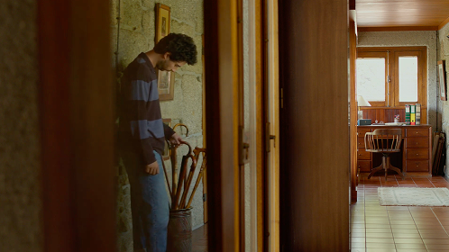
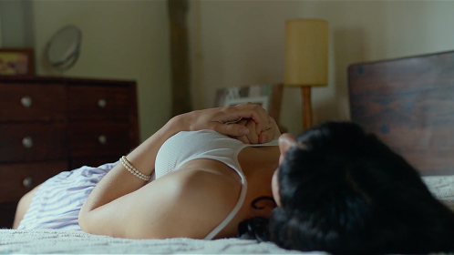
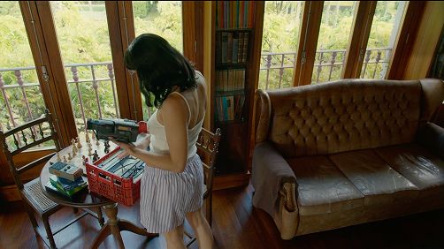
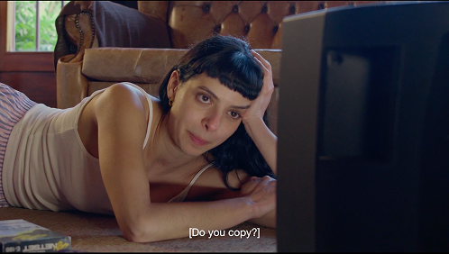
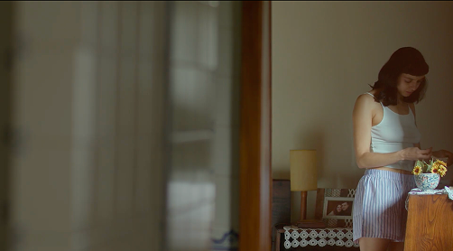
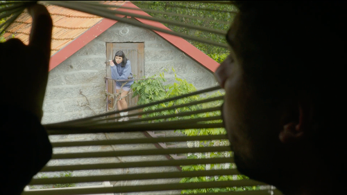
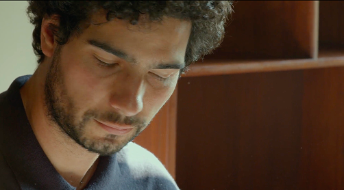
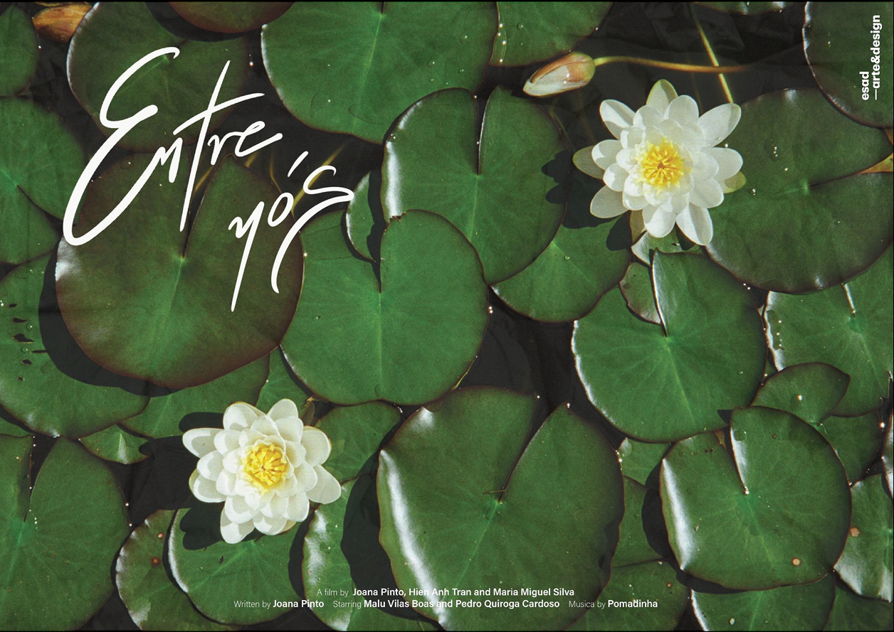

This short film explores the fractured relationship between two brothers, Lu and Vitor, who symbolically reconnect through their childhood home, left behind by their now-deceased parents. Although they never physically cross paths, both revisit the space, which Lu sees as a refuge, and Vitor as a place of confrontation with regret. Through an introspective narrative, the film offers a reflection on grief, emotional distance and the possibility of symbolic reconciliation, using the house as a metaphor for family ties that have been lost but remain latent.
Developed as a final degree project, 'Entre Nós' is a short film directed and produced by Joana Pinto, Maria Miguel Silva and Hien Ahn Tran. The opportunity to develop this project arose at a time of transition, when it became essential to seize every opportunity. Above all, it stemmed from the desire to begin building a meaningful path for ourselves as artists.








